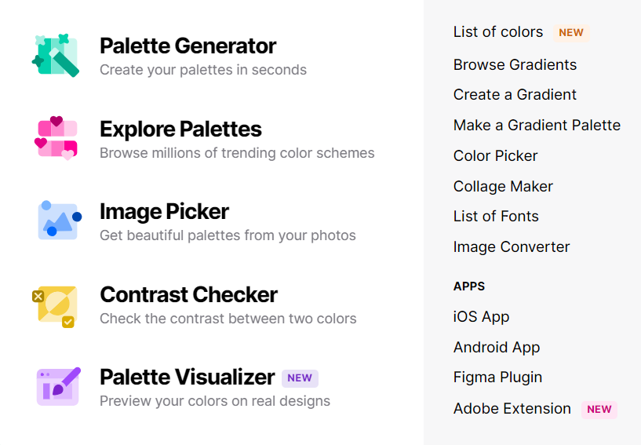
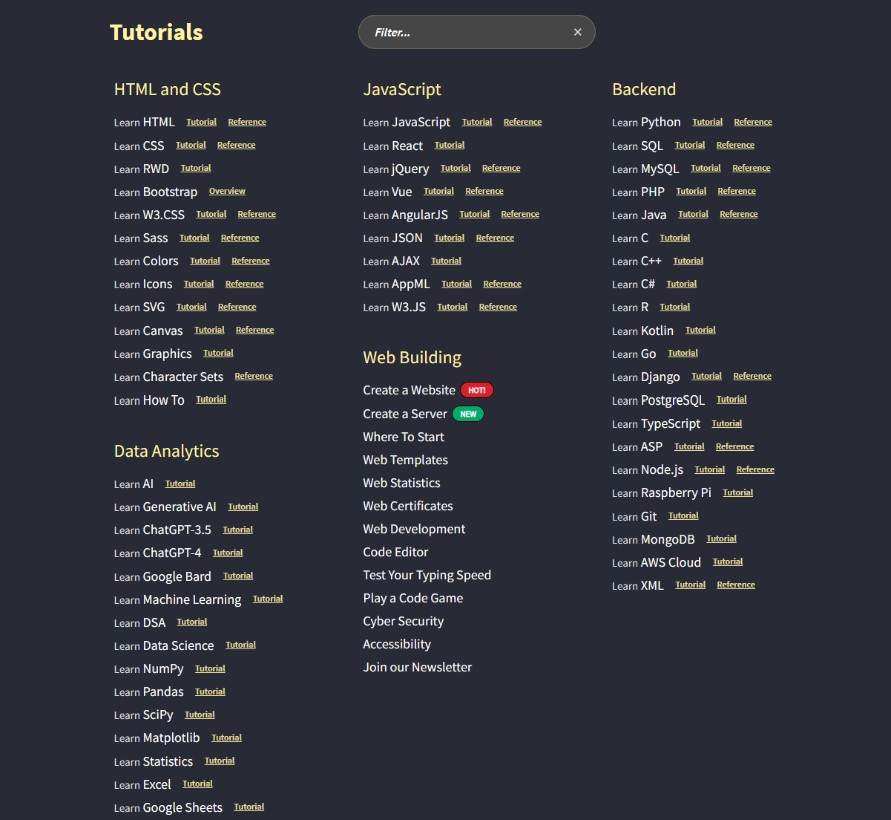
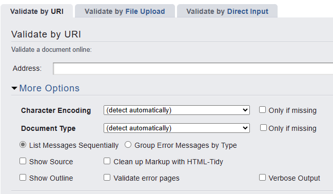

Design resources encompass a diverse array of tools, tutorials, references, and assets
essential for designers to excel in their craft. From software applications to online
platforms, these resources provide invaluable support at every stage of the design process.
They offer inspiration, guidance, and practical solutions to design challenges, aiding
designers in unleashing their creativity and bringing their ideas to fruition. Whether
mastering new skills, exploring trends, or refining techniques, design resources serve as
indispensable companions on the journey towards achieving design excellence.
Coolors
Coolors is a dynamic online platform designed to ignite creativity and streamline the
colour selection process for designers. With its user-friendly interface and extensive colour
library, Coolors enables users to effortlessly generate, customise, and save captivating
colour palettes tailored to their design projects.
Whether designing for web, print, or
multimedia, designers can explore endless colour combinations, experiment with hues, and
achieve harmonious schemes with ease. Additionally, Coolors offers valuable features like
colour blindness simulation and contrast checking, ensuring accessibility and inclusivity in design.
With its intuitive tools and inspirational resources, Coolors empowers designers to transform
their visions into vibrant and cohesive visual experiences.
See the full list of what Coolors has to offer below!

W3Schools
W3Schools stands as a cornerstone in the digital landscape, offering a comprehensive repository of
web development tutorials, references, and resources. Catering to beginners and seasoned
professionals alike, W3Schools equips designers with the knowledge and skills needed to master
HTML, CSS, JavaScript, and more. Through its user-friendly interface and hands-on examples, users
can delve into various aspects of web development, from basic syntax to advanced techniques.
Whether learning new concepts, troubleshooting code, or staying updated on industry standards,
W3Schools serves as a trusted companion on the journey towards design excellence in the
ever-evolving digital realm.
See the full extensive list of what W3Schools has to offer below!

Validators
W3C's HTML and CSS validators are indispensable tools for designers and web developers, ensuring
the adherence of websites to industry standards and best practices. By validating HTML and CSS
code, these resources help identify and rectify errors, ensuring optimal performance,
accessibility, and compatibility across various browsers and devices. Embracing these validators
not only enhances the quality and reliability of web content but also fosters user satisfaction
and engagement. Ultimately, leveraging W3C's HTML and CSS validators empowers designers to create
well-structured, semantically meaningful web pages that meet the highest standards of excellence,
elevating the overall user experience and establishing credibility in the digital landscape.
HTML Validator
W3C's HTML validator is essential for designers and web developers, ensuring websites
adhere to industry standards for optimal performance and accessibility. By identifying
and fixing errors, this tool enhances user experience and credibility online.
This HTML validator allows you to input by site URL, by file upload, and by directly
pasting the code to the validator.
See the options below!

CSS Validator
W3C's CSS validator is essential for designers, ensuring style sheets meet web standards
for consistent and reliable design across platforms, ultimately enhancing user experience.
This CSS validator allows you to input by site URL, by file upload, and by directly
pasting the code to the validator.